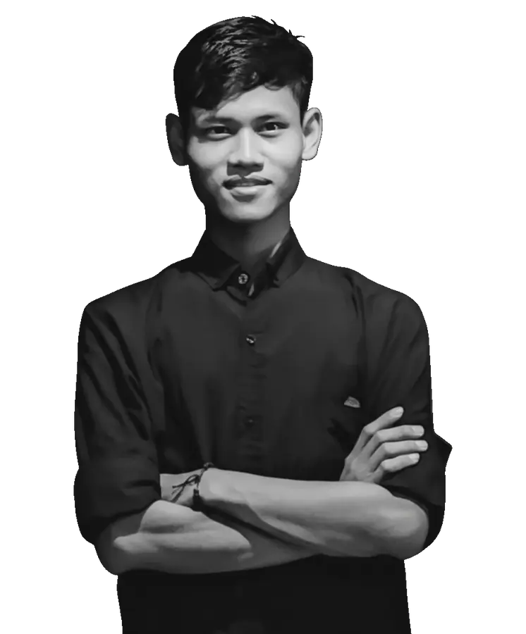
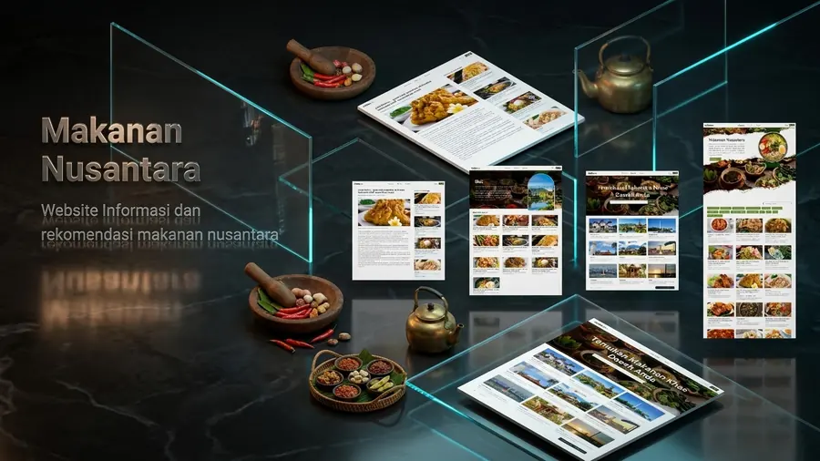
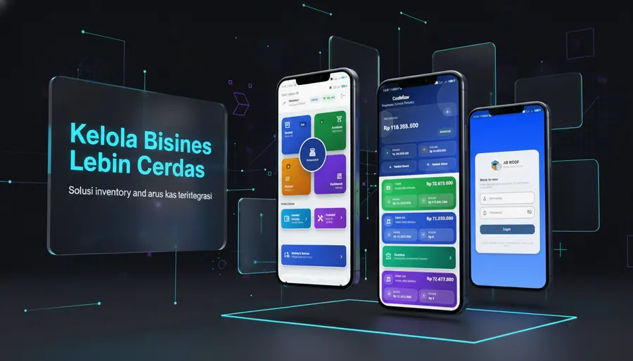
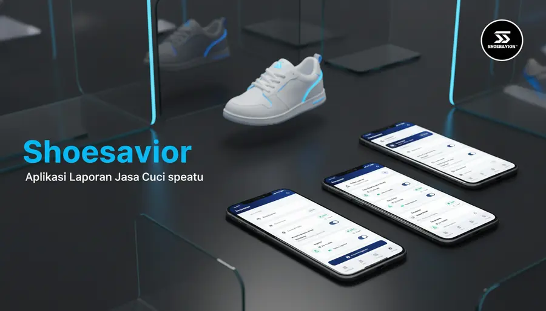
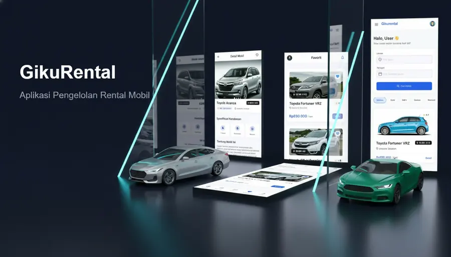
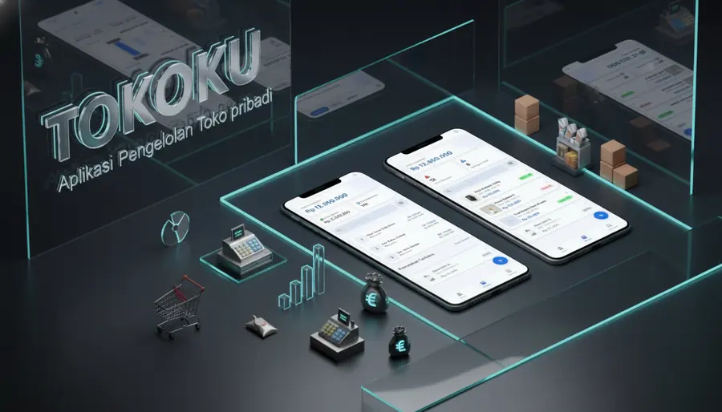

APLIKASI WEB
GK Rent Car
Website rental mobil dengan katalog armada dan alur booking cepat.
React • Tailwind • Booking UI • 2025
Halo, saya membangun produk digital yang siap dipakai
Full Stack & Mobile Developer yang fokus pada aplikasi bisnis, dashboard operasional, dan UI/UX produk digital untuk UMKM dan kebutuhan administrasi.

Studi Kasus
Beberapa pekerjaan yang menunjukkan kemampuan saya dalam merancang alur, membangun fitur inti, dan menyelesaikan masalah operasional lewat aplikasi web, mobile, dan desain produk.
APLIKASI WEB
Website rental mobil dengan katalog armada dan alur booking cepat.
React • Tailwind • Booking UI • 2025

APLIKASI WEB
Platform eksplorasi & rekomendasi kuliner Nusantara berbasis data.
React • Tailwind • Data Kuliner • 2025

APLIKASI WEB
Platform manajemen inventaris & keuangan berbasis web.
React • Tailwind • Chart.js • 2025

APLIKASI SELULER
Manajemen stok & keuangan UMKM dengan sistem offline-first.
Flutter • Hive • Offline-first • 2025

APLIKASI SELULER
Aplikasi tracking order & transaksi untuk jasa cuci sepatu.
Flutter • Firebase • Maps • 2025
.webp)
APLIKASI SELULER
Digitalisasi data warga & iuran RT dengan sistem terintegrasi.
Flutter • Hive • OCR • 2025

DESAIN UI/UX
Landing page rental mobil dengan fokus konversi & UX.
Figma • Prototype • Landing Page • 2025

DESAIN UI/UX
Desain aplikasi POS offline-first untuk transaksi dan keuangan UMKM.
Flutter • Figma • POS • 2025
Preview Interaktif
Aplikasi manajemen stok, transaksi, dan keuangan berbasis offline-first untuk UMKM.
Pilih kategori untuk melihat tampilan proyek dalam perangkat 3D.

Fokus saya ada pada aplikasi mobile, dashboard web, sistem administrasi, dan desain UI/UX untuk kebutuhan operasional. Saya terbiasa memecah masalah menjadi alur fitur yang praktis, mulai dari struktur data, tampilan antarmuka, sampai pengalaman pengguna yang mudah dipahami.
8+
Studi kasus
Web & Mobile
Fokus solusi
UI/UX
Product thinking
Demak, Indonesia
Jawa Tengah
Keahlian
Area pekerjaan yang paling selaras dengan proyek saya: membangun aplikasi operasional, merancang pengalaman pengguna, dan menyiapkan sistem yang mudah dirawat.
Membangun dashboard, landing page, dan sistem web responsif untuk menyajikan data, alur kerja, dan laporan secara jelas.
Mengembangkan aplikasi Flutter untuk transaksi, administrasi, tracking, dan kebutuhan offline-first dengan database lokal.
Merancang struktur halaman, flow pengguna, komponen UI, dan prototype agar fitur mudah dipahami sebelum masuk tahap development.
Menyusun struktur data lokal, backup, pencarian, dan penyimpanan agar aplikasi tetap berguna walau koneksi terbatas.
Membuat modul stok, transaksi, laporan, pengelolaan data, dan fitur administrasi untuk proses kerja harian.
Memperbaiki bug, merapikan UI, meningkatkan performa, dan menjaga aplikasi tetap nyaman dipakai setelah rilis.
ABROOF, TokoKu, MyRT14
Merancang alur transaksi, stok, keuangan, dan pengelolaan data agar tetap berjalan walau koneksi tidak stabil.
GK Rent Car, Makanan Nusantara, InventoryPRO
Membangun tampilan web responsif untuk landing page bisnis, eksplorasi konten, dan dashboard data operasional.
GikuRental, TokoKu
Menyusun hierarki informasi, komponen UI, dan flow interaksi untuk produk yang mudah dipahami pengguna.
Universitas AKI - Semarang
Fondasi rekayasa perangkat lunak, pengembangan web, pengembangan mobile, dan perancangan sistem informasi.
Saya selalu mempelajari teknologi baru. Saat ini sedang mengeksplorasi Rust dan Backend Engineering yang lebih dalam.
HUBUNGI SAYA